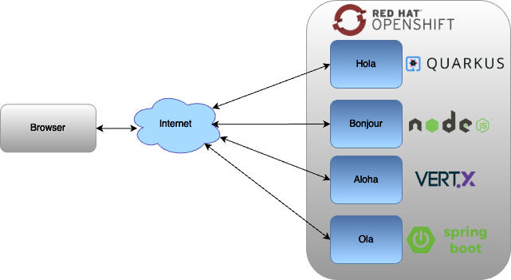

Red Hat - Hello world MSA (Micro Services Architecture)
Browser as a client
API Gateway
Service chaining
Refresh Results
Using Browser as a Client
Hello Service (JAX-RS / EAP)
Loading....
Hola Service (JAX-RS / WildFly Swarm)
Loading....
Loading....
Bonjour Service (NodeJS / Express)
Loading....

Refresh Results
Using an API Gateway
Refresh Results
Using Service chaining